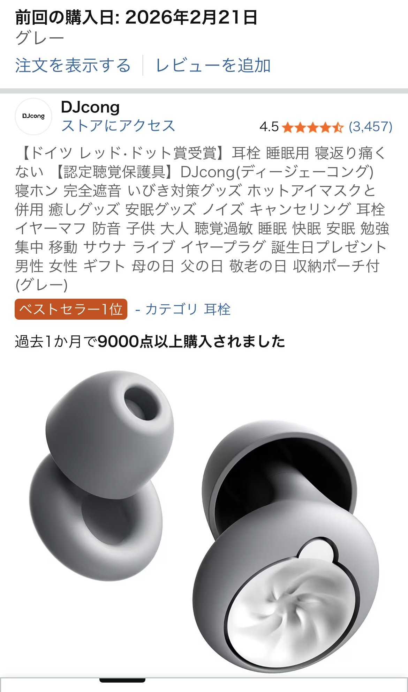

柔らかいシリコン耳栓で快眠は変わる？実際の口コミから分かったメリット・注意点

「寝るときの物音が気になって眠れない」「いびき対策に耳栓を試したいけれど、耳が痛くなりそうで不安」――そんな悩みを持つ人にとって、 柔らかいシリコン耳栓はかなり有力な快眠アイテムです。実際に使った口コミでは、 サイズさえ合えば、寝返りを打っても窮屈さが少なく、違和感も小さいという声が目立ちます。
柔らかいシリコン耳栓の特徴：寝返りしても「圧迫感が少ない」
今回参考にした口コミでは、「耳栓自体が柔らかいシリコン材なので寝返り等でも違和感なく窮屈な感じなし」と高評価でした。 一般的なフォームタイプの耳栓は、遮音性は高いものの、長時間つけていると耳の中が押されるような圧迫感を覚える人もいます。 一方、柔らかいシリコン耳栓は、耳の形に沿ってやさしくフィットするため、 横向きで寝ても耳の中がゴリゴリしにくいのが大きなメリットです。
また、シリコン素材は弾力がありつつも柔らかいので、寝返りを打ったときに枕との接触で耳栓が押されても、 その力をうまく逃がしてくれます。結果として、「つけていることを忘れるレベル」で快適に眠れたという声もあり、 夜中に耳栓が気になって目が覚めてしまう人には試す価値が高いアイテムと言えます。
快眠のカギは「サイズ選び」：イヤーピースを妥協しない
口コミの中で特に重要だと感じたのが、イヤーピースのサイズ選びです。 「イヤーピースはいくつか種類があるのでフィットするものを選びましょう」とあるように、 付属のイヤーピースを適当に選んでしまうと、本来の遮音性も快適さも十分に発揮されません。
サイズが大きすぎると、耳の入り口が押し広げられて痛みや圧迫感につながります。 逆に小さすぎると、隙間から音が入り込み、「つけているのにうるさい」という残念な結果に。 理想は、軽くねじ込んだときにスッと収まり、少し引っ張っても簡単には抜けない程度のフィット感です。
初めて使う場合は、最初から一番大きいサイズを選ばず、中〜小サイズから試すのがおすすめです。 両耳で微妙にフィット感が違うこともあるので、「右はM、左はS」といった組み合わせも遠慮なく試してみると、 自分だけのベストな装着感に近づけます。
どんな人に向いている？YouTuberも紹介する「快眠アイテム」
参考口コミでは、「YouTuberも同じ耳栓を快眠アイテムで紹介していて共感しました」とありました。 睡眠系・ガジェット系のYouTuberが取り上げるということは、一定以上の満足度と汎用性があるという裏付けにもなります。
特におすすめしたいのは、次のようなタイプの人です。
- パートナーのいびきや生活音で眠りが浅くなりがちな人
- マンションの生活音・外の車の音が気になる人
- 出張や旅行先のホテルでも安定した睡眠環境を作りたい人
- フォームタイプの耳栓で耳が痛くなった経験がある人
完全な無音を目指すというよりは、「不快な音をほどよく減らして、眠りに入りやすくする」イメージに近いです。 そのため、目覚ましのアラームやスマホの通知を完全にシャットアウトしたくない人にも使いやすいバランスと言えます。
注意点：サイズが合わないと評価が一気に落ちる
一方で、「サイズ感さえ問題なければ有効な快眠アイテム」という表現からも分かる通り、 サイズ選びを間違えると評価がガクッと落ちる点には注意が必要です。 耳の形や耳道の太さは人によってかなり違うため、万人に100％フィットする耳栓は存在しません。
もし実際に使ってみて、
- 耳の入り口が痛い・かゆい
- 朝起きたら耳栓が外れて枕元に転がっている
- つけた瞬間に違和感が強くて集中できない
といった症状がある場合は、サイズを変える・装着の深さを調整することをまず試してみてください。 それでも合わない場合は、自分の耳にはフォームタイプや別形状の耳栓の方が合っている可能性もあります。
柔らかいシリコン耳栓は「コスパの良い睡眠投資」
睡眠の質が上がると、日中の集中力やメンタルの安定にも直結します。 それを数千円前後の耳栓でサポートできるのであれば、コスパの良い自己投資と言って良いでしょう。 特に、毎晩のように物音に悩まされている人にとっては、睡眠環境を一段階引き上げてくれる心強い日用品です。
口コミのように「サイズ感さえ問題なければ有効な快眠アイテム」と感じる人は多く、 柔らかいシリコン素材・複数サイズのイヤーピース・寝返り時の快適さというポイントが揃っている耳栓なら、 初めての睡眠グッズとしても十分に“買う価値あり”のアイテムだと感じました。
柔らかいシリコン耳栓を試してみたい人へ
「まずは手軽に快眠アイテムを試してみたい」「いびきや生活音対策をしたい」という人は、 柔らかいシリコン耳栓を一つ持っておくと、旅行や出張、実家への帰省など、さまざまなシーンで役立ちます。
実際の口コミや評価をチェックしながら、自分の耳に合いそうなモデルを選んでみてください。
Amazonで詳細を見る※上記リンクはAmazonアフィリエイトリンクを含みます。